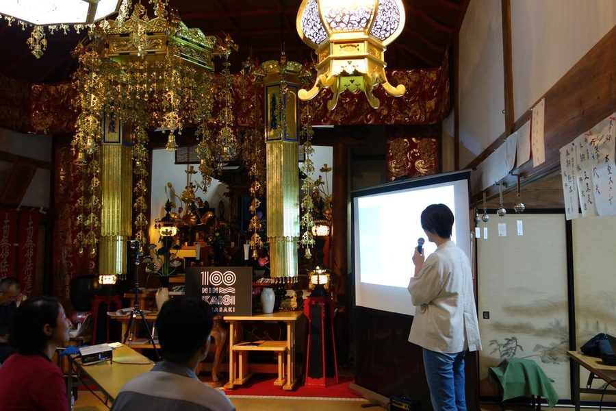
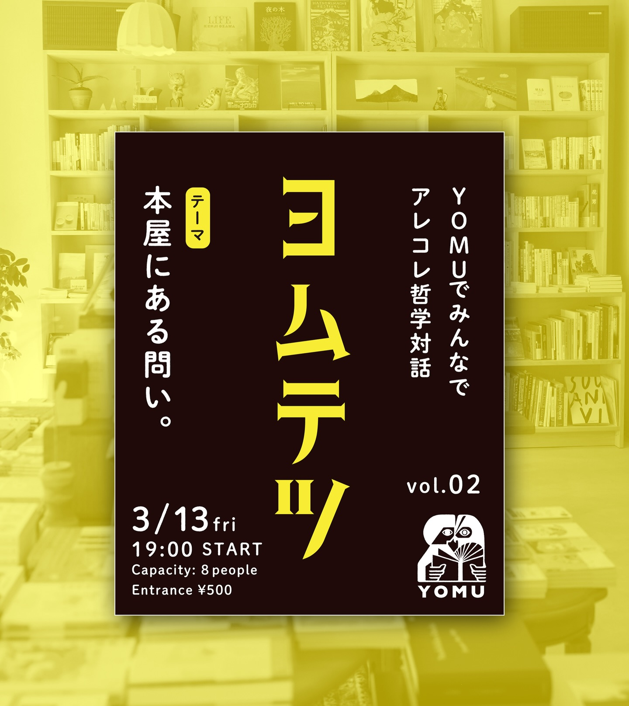

NIRASAKI 100 PEOPLE人を知る。
街が変わる。韮崎市100人カイギ
街が変わる。韮崎市100人カイギ
01 — COMMUNITY
韮崎市100人カイギ
街で暮らし、働く人たちの物語を届けるサイト。
01 / SELECTED WORKS
ひとりの仕事から、街のつながりまで。
それぞれの「伝えたい」に、合うかたちを。

街で暮らし、働く人たちの物語を届けるサイト。
仕事と活動を、ひとつの言葉と世界観でつなぐ。
財団の活動を伝えるWebサイト。トップページの導入アニメーションを紹介しています。
IN PRACTICE / 自分の事業で使う仕組み
スタッフがGASアプリで休み希望を入力。スプレッドシートに集まった希望をもとに、AIがシフトのベースをつくります。最後の確認・調整は人の手で。
編集とは何か
たとえば、よくある自己紹介の一文。ここに赤を入れると、こうなります。
私はWeb制作とコーチングのサービスを提供しています。主語が「私」。相手の変化が無い。
あなたの熱を、まだ会っていない人に伝わる形にします。
編集とは、飾ることではなく、要素を全部見たうえで「どこを見せて、どう見せるか」を決めること。文章でも、サイトでも、業務でも、あなたの進路でも、やることは同じです。
こんなとき、声をかけてください
熱意はみんなが持っています。形がさまざまなだけ。それが名刺の上で薄まり、退屈な作業の中で冷め、ひとりで見つめるうちにズレていく。だから、第三者が要ります。
地域に入った協力隊、独立したばかりの個人事業主。「何をしている人か」を、相手が初めて会う前に知れる場所がない。
店を回すのに手一杯で、本当にやりたかった仕込みや接客に時間が残らない。AIが使えると聞くが、何から手をつければいいかわからない。
モチベーションが保てない。好きなことは別にある気がする。でも、その「好き」を仕事や次の一歩にどう繋げればいいかが見えない。
02 / WHAT I DO
料金は目安です（税込）。内容と期間によって変わるので、まず状況を聞かせてください。初回30分のヒアリングは無料です。
01 主軸
地域おこし協力隊・個人事業主・小さなお店やプロジェクトの方へ
テンプレートに情報を流し込むのではなく、まず対話であなたの熱意と言葉を掘り出します。対話の資格を持つ元エンジニアが、ヒアリングから設計・デザイン・実装・公開まで一人で担当。公開後は「言葉が変わったら、サイトも変える」伴走を続けられます。
15万円〜／制作一式
1万円〜／月 更新・伴走（任意）
ページ数・撮影・ドメイン取得などにより変動します。見積もりは無料です。
02
AI導入 — 個人事業主・飲食店・小規模店舗から、部署単位で導入したい企業まで
どの作業をAIに渡し、どの仕事をあなたの手に残すか。その答えは、もうあなたの頭の中にあります。私がするのは、対話でそれを取り出し、整えるお手伝いです。
シフト作成、予約受付、日報や告知文の下書き。毎週同じ手を動かしている作業をAIと既製ツールに渡し、あなたの時間を熱のある仕事に戻します。自分の事業のシフト管理を自作して回している経験から、「作りすぎない」導入を設計します。お客様の機密情報は預かりません。設定はダミーデータで行い、本番のデータはあなた自身が投入する運用です。
聞く（コーチング）→ 決める（編集）→ 渡す（実装）。AIはこの3番目にしか出てきません。
| 90分の対話で業務を棚卸し、どこにAIやツールを入れるかの診断書をお渡し | 3万円 |
| 予約サイト構築（既製の予約サービス連携、ページ込み） | 20万円〜 |
| 業務効率化1本（シフト自動作成など。ツール選定・設定・引き渡し） | 15万円〜 |
| 複数業務まとめて（3本まで） | 40万円〜 |
既製ツールの月額利用料は別途。作らずに済むものは作りません。
| 研修 半日（3時間・人数無制限） | 30万円 |
| 研修 1日（6時間） | 50万円 |
| 研修 12時間プログラム（2日） | 90万円 |
| 伴走 個人事業主・小店舗（月1定例＋チャット） | 月5万円 |
| 伴走 企業（月2定例＋定着フォロー） | 月12万円 |
12時間プログラムは、人材開発支援助成金の対象となる訓練時間を満たす設計です（適用可否は管轄労働局にご確認ください）。
03
退屈している、やる気が出ない、次の一歩が見えない社会人・経営者・学生の方へ
熱は揺らぐものです。それを観測し、絶やさないための薪を焚べるのがコーチングだと考えています。ICF認定スクール CAM Japan で学んだコーチ的コミュニケーションを土台に、「そのモチベーションって、そもそも何？」から一緒に掘ります。1回で終わらず、継続の中で変化を見ます。
5,000円／初回体験60分
2万円〜／月 月2回コース
3か月単位での契約を基本としています。
進め方
サイト作成でも、AI導入でも、コーチングでも、流れは同じです。作るものが変わるだけ。
下のフォームから、いまの状況をひとことで。30分のオンラインヒアリングを無料で行い、合いそうかをお互いに確かめます。
何が好きで、なぜ好きか。何が面倒で、なぜ面倒か。価値観と業務の出どころを一緒に辿ります。ここが一番時間をかける工程です。
掘り出したものから、どこを見せて、どう見せるか。何を人が持ち、何をAIに渡すかを決めます。
形にしてお渡しします。終着点は渡しません。熱が揺らいだときに戻ってこられる場所として、続けて関わります。

03 / ABOUT ME
編集者・ライター
キャリアの出発点はITエンジニアでした。仕事は退屈で、タイパだけで動く日々。その退屈から逃れるために会社を辞め、個人として働く道を選びました。
転機は、批評ラジオやエッセイとの出会いです。自分の視野の狭さ、言語化の稚拙さを自覚し、「では何をすればいいか」を探る行為そのものが面白くなった。内省にハマり、ジャーナリングが続き、哲学対話の場に通うようになりました。
いまは山梨県韮崎市を拠点に、哲学対話のファシリテーション、地域の場づくり、コーチング、サイト制作とAI導入をしています。共通しているのは「その人の熱意を観測し、伝わる形に編集する」こと。退屈な作業はAIに渡し、夢中になれることに時間を戻す。夢中こそが退屈を救う、と信じています。
04 / AROUND THE TOWN
サービスの外で続けている活動です。ここで見ているものが、仕事の土台になっています。

哲学対話／ファシリテーター
韮崎の本屋「YOMU」で開く哲学対話。店内を歩いて本のタイトルや目次から「問い」を拾い、輪になって話します。沈黙も、まとまらない話も歓迎。定員8名の小さな会を、ファシリテーターとして進めています。
Instagram で見る（新しいタブで開きます） →コミュニティイベント／運営
街で暮らし、働く100人の物語に出会う。毎回5人が登壇し、20回で100人に達したら解散するイベントを、韮崎の蓮照寺の本堂で毎月開いています。人が自分の熱を人前で語り、それが伝わっていく瞬間に立ち会う場です。
公式サイトを見る（新しいタブで開きます） →
ローカルメディア／取材・執筆
山梨県韮崎市のローカルメディア。街の店主や移住者、協力隊を取材し、この街で暮らし働くことの面白さを記事にして届けています。100人カイギのレポートも掲載。
サイトを見る（新しいタブで開きます） →よくある質問
はい。むしろ、はっきりしていない状態からの対話が一番の得意分野です。「なんとなくサイトが要る気がする」「AIを使えと言われるが何から」「何かを変えたいが何かがわからない」で構いません。
ありません。設定や検証はダミーデータで行い、本番の顧客情報・従業員情報・売上はお客様自身が投入します。管理画面の権限は納品時にお返しします。「AIに入れてよい情報・いけない情報」の線引きを1枚の文書にしてお渡しし、それ自体を研修の教材にします。
作らずに済むなら作りません。予約もシフトも、月数千円から使える既製サービスが揃っています。私の役割は、業務を棚卸しして合うものを選び、設定して、使い方を渡すこと。既製で足りない部分だけを、Google Apps Script などで最小限つなぎます。
できます。ヒアリング、コーチング、研修はすべてオンラインで実施可能です。対面をご希望の場合は、山梨県内は伺えることが多く、県外は交通費をご相談させてください。
できるように作ります。更新方法のレクチャーを納品に含めています。「自分ではやりたくない」場合は、月額の更新・伴走プランで代わりに行います。
あります。工数に対して報酬が著しく見合わないもの、機密情報の管理そのものを委託したいもの、私が提供しているのはメンター的な伴走であって助言やケアだけを目的とするもの、政治団体・宗教団体・反社会的勢力に関わるものはお断りしています。合わないと感じた場合も、理由を添えて正直にお伝えします。
銀行振込を基本としています。制作・導入は着手時と納品時の2回払い、コーチングと伴走は月初の前払い、研修は実施日の前日までです。キャンセル・返金の条件は特定商取引法に基づく表記に記載しています。
お問い合わせ・ご相談
2営業日以内に、西村本人から返信します。返信後、30分の無料オンラインヒアリングの日程を調整します。
CONTACT / GOOGLE FORMS
いまの状況や、聞いてみたいことをお送りください。内容を確認して、西村本人からメールでお返事します。
Googleフォームで相談する（新しいタブで開きます）Googleフォームの画面で入力・送信いただく形式です。
プライバシーポリシー
18歳未満の方は、保護者の方からご連絡ください。